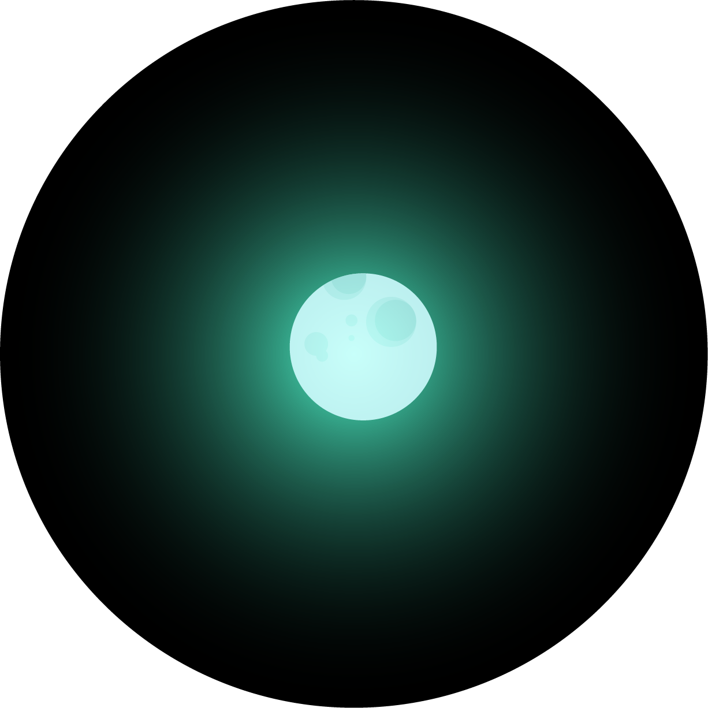
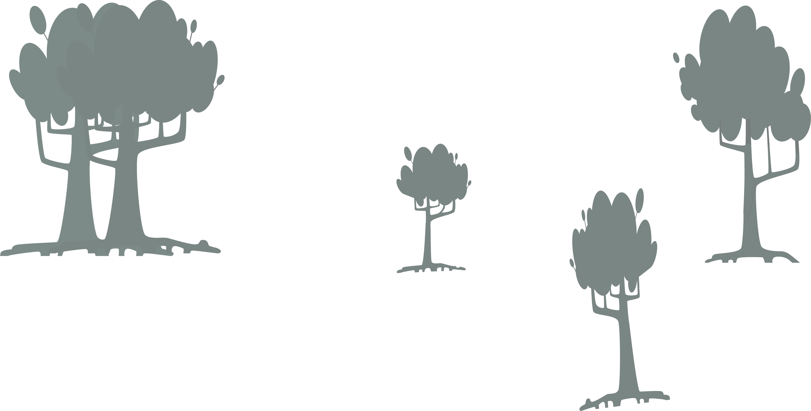
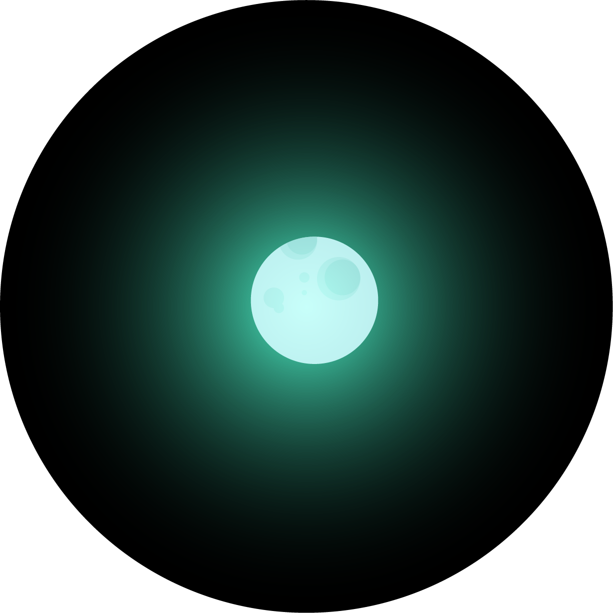
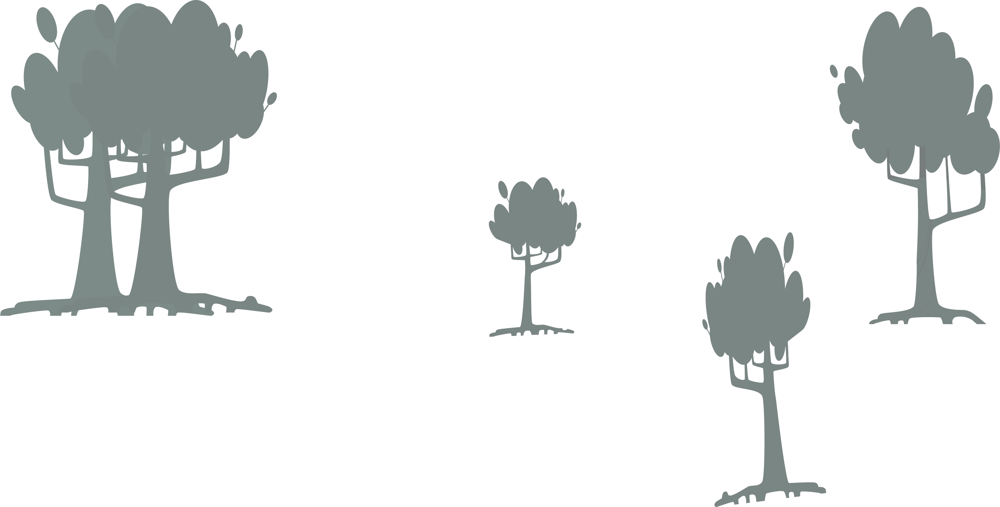
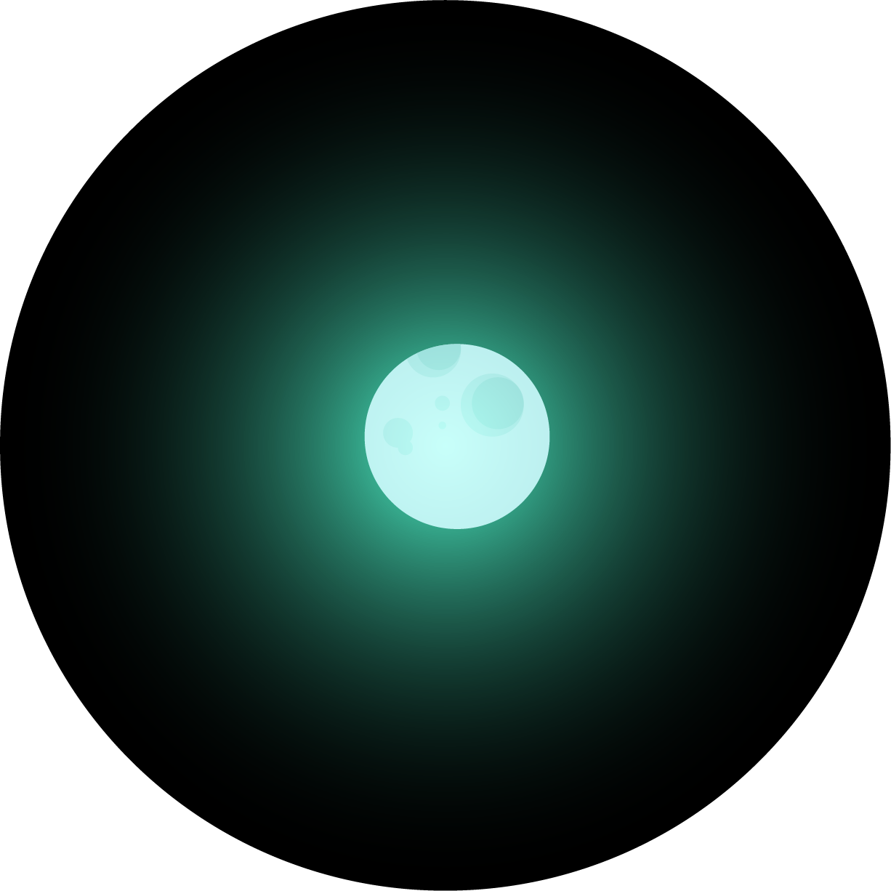
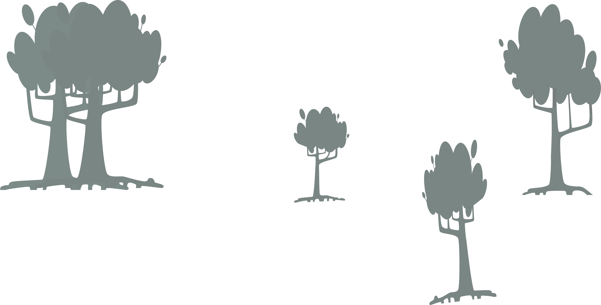
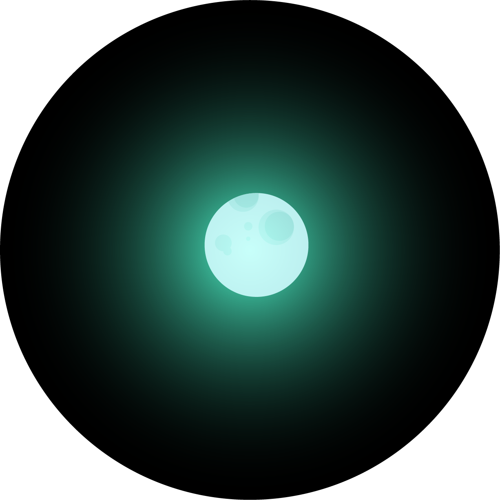
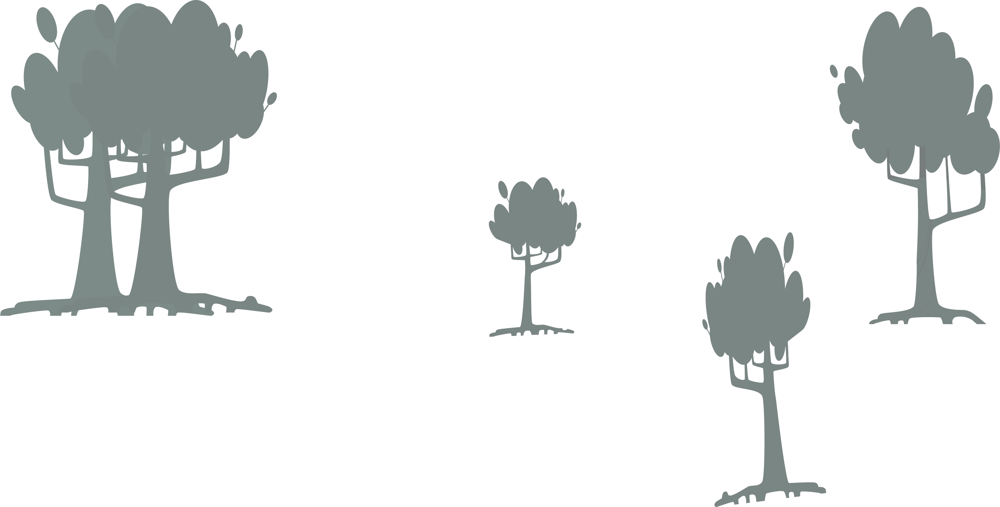

Eye for an eye? I grit my teeth under the weight See, I got my back up against the wall; it's 'bout to break Walking through the fight Ah, living, living's never easy Coming for the light Give it, give it, give it Now I wanna Live through the night Come out alive Hold your fire Why don't you let me go? I, I need to Live like I'm higher Feel like I'm lighter Why don't you let me go? Why don't you let me go? Why don't you let me go? Wait, you try to fill it with no bottom to the glass Why? I see you cover and point your finger on attack Walking through the fight Oh, living, living's never easy Step into the light Oh, give it, give it, give it Now I wanna Live through the night Come out alive Hold your fire Why don't you let me go? I, I need to Live like I'm higher Feel like I'm lighter Why don't you let me go? Why don't you let me go? Why don't you let me go? I can't even breathe Don't feel my heart beat, no Oh, hey, it's the time to leave Oh, why don't you let me go? Oh, why don't you let me go? Now I wanna Live through the night Come out alive Hold your fire Why don't you let me go? I, I need to Live like I'm higher Feel like I'm lighter Why don't you let me go? Why don't you let me go? Why don't you let me go? No, no, no
The parallax scrolling allows the user to perceive an impression of depth. The website appears as a 3D animation that scrolls down the page. This operational concept is particularly well adapted to storytelling, as the reading of the contents is encouraged by the scrolling effects, animations and advertising displays. The parallax scrolling is also found in web design under the terms parallax website, scrolling website or parallax web design.
The term parallax scrolling is used to describe websites whose operating concept differs significantly from conventional navigation menus: websites with parallax scrolling are operated using the scroll function of the mouse. If the user scrolls through the website, the elements of the website move at different rates. A background image moves slowly, while images or graphic elements in the foreground move faster.
Parallax scrolling can be created in different ways on websites. In general, background images and visual elements are inserted in the foreground so that the viewer can move through the landscape via the scroll function. The global image or the visible area above the fold is the landmark - also called viewport - for the viewer: the website moves, so to speak, from this fixed landmark, while the individual elements move more slowly and quickly. These movements are caused by Slides, Fade out, Fade in and fixed elements such as text or graphics loaded continuously via so-called HTML Reflow. The arrangement of the partly animated elements on the parallax scroll leads to a dynamic display of the website contents: the user "experiences" the contents as they move horizontally.
The website itself is, from the point of view of its design, often a Single Page or OnePager website: source code, texts, images, CSS and scripts are in one and the same document filed on a server. The effects are controlled via selectors and CSS tags, the requests are managed by the effects, after being triggered by the user who has scrolled the page. In the case of multiple scripts, very detailed graphics, high resolution images or high rendering, the loading time of the content can be longer than expected. For this reason, it is advisable to use effects only in a subtle way and it is always better to choose a light source code. Ideally, parallax scrolling is part of the overall website concept, which can also be a multi-page website for targeted use.
Devansh Kumar Sharma :- devansh.sharma_cs20@gla.ac.in
Shubhneet Kumar :- shubhneet.kumar_cs20@gla.ac.in
Jigyas Chaudhary :- jigyas.chaudhary_cs20@gla.ac.in
Sagar Kushwaha :- sagar.kushwaha_cs20@gla.ac.in
Vaishnavi Singh :- vaishnavi.singh_cs20@gla.c.in